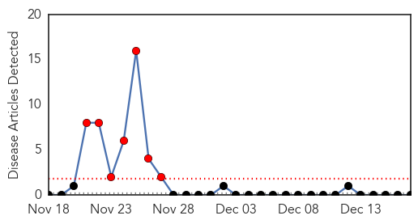
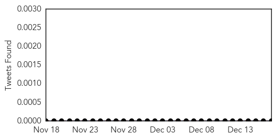

Bubonic Plague
30-Day Web Trend
7 alerts, 0 warnings

30-Day Twitter Trend
0 alerts, 0 warnings

Article Locations


Article Confidences

Top Articles:
-
No articles found for Dec 17, 2014
Top Tweets:
-
No tweets found for Dec 17, 2014
Influenza
30-Day Web Trend
1 alerts, 0 warnings

30-Day Twitter Trend
Article Locations

Article Confidences

Top Articles:
- 0.999
- It's Not Too Late and Yes, It's Necessary
- 0.996
- Flu prompts Beaumont hospitals to restrict visitors
- 0.996
- Early flu season ramps up, crowding hospitals
- 0.993
- Le Bonheur Children's Hospital treats 300 flu cases daily
- 0.993
- Le Bonheur Children's Hospital treats 300 flu cases daily
- 0.991
- Flu bug hits Randolph, hospital visits restricted
- 0.988
- WBOC-TV 16, Delmarvas News Leader, FOX 21 -
- 0.988
- Influenza type A Cases Increasing
- 0.984
- Washington State bird flu cases confirmed
- 0.982
- Flu cases increasing in Delaware
- 0.975
- Flu outbreak forces Visitation Lower School to close, scrub down
- 0.967
- Flu cases increasing in Delaware
- 0.956
- The Flu Shot or Nasal Spray: Which is For You?
- 0.941
- The Norwalk Health Department now Offers Pneumococcal Conjugate Vaccine (PCV-13)
- 0.928
- Flu spreads like ‘wildfire,’ Kirkland school calls off classes
- 0.874
- Washington agriculture officials to hold town hall meeting on avian influenza
- 0.865
- Dead goose tests positive for bird flu in Chandigarh
- 0.862
- Fairview restricts visitors due to widespread influenza season
- 0.832
- Ailments trigger alarm as mercury fluctuates
- 0.814
- All activities in & around Sukhna suspended
- 0.812
- Avian flu found in wild birds in Whatcom County
- 0.803
- McDuffie County school system closes after influenza outbreak
- 0.709
- HPAI reported in US wild birds and Italian turkey farm
- 0.677
- EFSA report examines HPAI transmission into Europe
- 0.628
- Avian flu found in wild birds in Washington state; not known if it is related to B.C. epidemic
- 0.613
- Duck in Sukhna lake dies of avian flu; administration on alert
- 0.575
- Quebec City hospitals ban visitors
- 0.515
- hola arkansas Consulate of Mexico offers flu vaccines for free
Top Tweets:
-
No tweets found for Dec 17, 2014